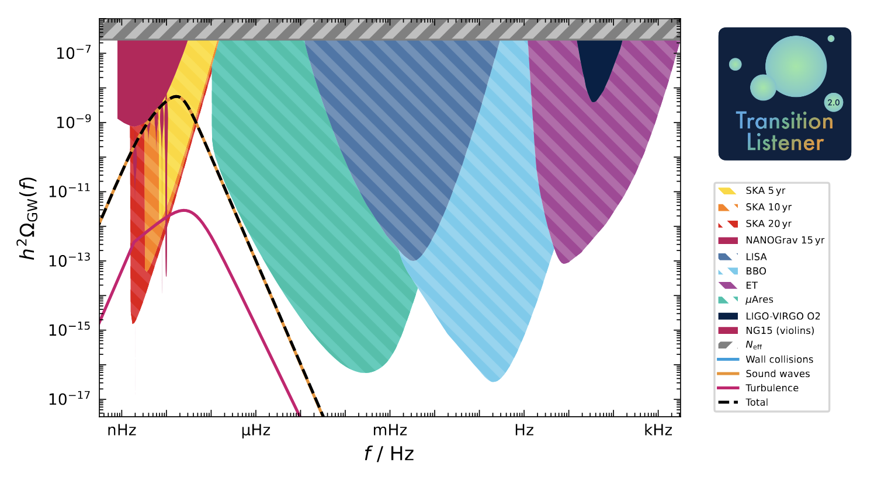

Getting started¶
A first look at TransitionListener¶
Using TransitionListener for studying the gravitational wave signal from cosmological first-order phase transitions is really straightforward: Just run
$ tl -c examples/example_point.yaml -v
once you have installed TransitionListener. For the example above, TransitionListener will create the following plot in the the folder scans/example_point/GW_spectrum.pdf:
{kind=link}

This is the gravitational wave spectrum produced by a first-order phase transition in a simple extension of the Standard Model with an additional \(U(1)\) gauge symmetry with conformal invariance, as described in arXiv:2502.19478.
Have a look into the configuration file examples/example_point.yaml. It starts as follows:
# Single-point scan for the conformal U(1) model
# Run with: tl -c examples/example_point.yaml -v
# ==================================================
# Scan settings
# ==================================================
Modelfile:
models/TL_conformal_dark_u1.py
Potential:
specific_potential
Scan:
SinglePoint
Parameters:
g: 0.7
v_GeV: 0.1
y: 0.01
Change the model input parameters to see how the gravitational wave signal is affected! You can also leave out the -v flag to suppress verbose output in the console.
More plots and diagnostics¶
Let’s discover the various options of the yaml file for controlling
TransitionListener. The yaml file continues as follows:
# ==================================================
# Output settings
# ==================================================
timeout: -1 # Timeout in seconds, -1 for no timeout
format: "txt" # either "txt" or "hdf5"
output_path: "scans/example_point"
description: "example point, conformal U(1) model"
plot_description: "Example point, conformal $U(1)$ model"
This part specifies the output format and location as well as a timeout
for the run. Sometimes, e.g., when working on a cluster with limited
resources, it is useful to set a timeout for the run. The output format
can be either .txt files or .hdf5 files. The output path specifies the
folder where all output files will be stored. The description and
plot_description fields are used for labeling the output files and plots.
Note that the plot_description field supports LaTeX formatting.
The next part of the yaml file controls the plotting options:
# ==================================================
# Plot settings
# ==================================================
# Additional plotting options for single point scans
additional_plots:
action:
plot?: False
Tmin_GeV: 0
Tmax_GeV: 0.05
phase_indices: [0, 1]
n: 100
potential:
plot?: False
T_GeV: 0.02
phi_ranges_GeV: [0, 1]
n: 100
phases:
plot?: False
include_transitions?: False
profileV:
plot?: False
field_index_1: 0
field_index_2: 1
energy_density:
plot?: False
Tmin_GeV: 0.01
Tmax_GeV: 0.05
dofs:
Tmin_GeV: 0.01
Tmax_GeV: 0.05
plot?: False
sensitivities:
plot?: False
profile:
plot?: False
percolation:
plot?: False
gw_spectrum:
plot?: True
Each subsection under additional_plots toggles a specific figure via
its plot? flag and carries the configuration values needed for that plot.
Just try setting some of the plot? flags to True and re-run
TransitionListener to see the corresponding plots being created in the output
folder! If you want to learn more about the individual plots and their
configuration options, please refer to the Plots section of the
documentation.
That’s it! You are now ready to explore TransitionListener and its features. Have fun studying cosmological phase transitions and their gravitational wave signals!
For detailed installation instructions and usage examples please refer to the following sections:
Installation: Installation Guide
Usage: Usage
For more information, visit the documentation at https://tasillo.de/TransitionListener_development or check out the code repository at https://github.com/tasicarl/TransitionListener.